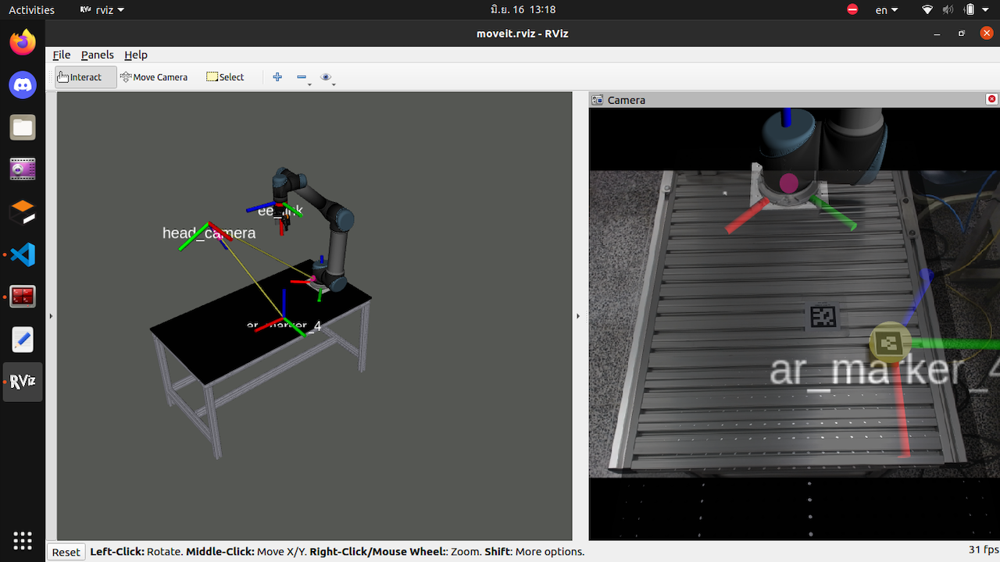

DATA TRANSFER / CONCEPT
DATA
SourceTRANSFER
ApplicationDATA
Destination
SourceTRANSFER
ApplicationDATA
Destination
Transfer Data
A completed application for transferring data, developed through my PC-based programming work.
Manufacturing Engineering / Industrial Software
PC-based software. Connected manufacturing.
C#, VB.NET, and the machines they connect to.
Currently building PC-based applications at Epson.
Technologies I work with
Selected work
A completed application for transferring data, developed through my PC-based programming work.
Communication libraries for Keyence and Omron PLCs. The link between a PC application and an industrial controller.

A project combining a PLC and an industrial robotic arm with the Robot Operating System (ROS).
Experience
A foundation in electrical and instrumentation systems. A focus on software for manufacturing.
JUNE 2026 — PRESENT
Manufacturing Engineering
PC-based programming for machinery in production lines, using .NET Windows Forms with C# and VB.NET.
PREVIOUS EXPERIENCE
Engineer · Electrical Section
Facility Maintenance Department.
INTERNSHIP
Instrumentation Engineering Intern
INTERNSHIP
Facility & Utility Department Intern
What I work with
PC-based applications that support production machinery and manufacturing operations.
PLC communication libraries and experience connecting software with control systems.
Applying software and practical engineering knowledge to improvement work on the production floor.
Also in my toolkit Python · HTML · CSS · JavaScript · Mitsubishi PLC · Siemens PLC
A little about me
I like writing code that does something you can see on the factory floor.
I'm Sarawin, an engineering graduate from King Mongkut's University of Technology North Bangkok (KMUTNB), with a background in Instrumentation System Engineering.
My experience spans facility maintenance, electrical systems, and automation. Today, I work in Manufacturing Engineering at EPSON PRECISION (THAILAND), developing PC-based software for production machinery.
I'm also exploring AI and IoT as ways to extend what engineering systems can do.